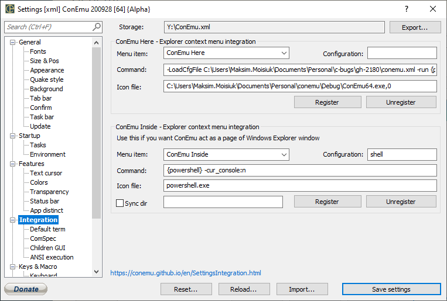

Integration

You may register here several menu items, which will be shown in the Explorer popup menu (used in folder background, folder items, libraries).
Note! Your items are registered in Windows registry, they can't be ‘portable’.
ConEmu offers two types of integration, registered separately:
- ‘ConEmu Here’ (upper group) - classic mode, your shell will be started in normal ConEmu window;
- ‘ConEmu Inside’ (lower group) - your shell will be started in the pane of your Explorer window.
ConEmu Inside
When you run one of ‘ConEmu inside’ items, ConEmu window will be started inside your Explorer window.

But it is yours responsibility (on most of OS versions) to provide some free space in your Explorer. For example, turn on ‘View page’ or ‘Details pane’ in Win8's before calling one of ConEmu Inside items.
In that mode, ConEmu can automatically sync directory (change folder in Explorer window and ConEmu will automatically ‘cd’ to this folder in your shell). To enable this mode - click on the ‘Sync’ item in the ConEmu status bar.
To pop up ConEmu system menu - right click on the leftmost part of the ConEmu status bar.
To pop up ConEmu ‘Tab’ menu - right click on the [+] item in the ConEmu status bar.
‘Integration’ page items description

Menu item
What you will see in the Explorer popup menu. You can use & sign to set hotkey for the menu item. For example, register ConEmu &Here and you can press Alt+H to run it from keyboard. Of course, you need to pop up menu first. There is no way to register ‘global’ shortcut for these methods.
Configuration
Especially for Inside mode. Allows to set different font, palette and other settings for your ConEmu instance.
Command
Specify your shell here (cmd, powershell, Far Manager, etc.)
Use %1 macro for ‘clicked’ item (this may be folder or file!)
If you need to pass directory instead of right-clicked file, you can use ‘ConEmuWorkDir!’ macro, example:
"C:\Program Files\Far Manager\Far.exe" "!ConEmuWorkDir!"
Want to run shell in the existing window instead of creating new one? Use ‘/single’ switch with following ‘/cmd’, example:
/single /cmd powershell
Icon file
Examples: ‘C:\Far\far.exe,0’, ‘powershell.exe’, ‘C:\Images\Icon.ico’.
Sync dir (Inside mode only)
Here you can choose special command for ‘cd’ in your shell. You may use following macro here
\e - Esc keypress \b - BackSpace keypress \n - Enter keypress \1 - "dir", for example "C:\Users\Max" \2 - "bash dir", for example "/C/Users/Max"
The default is
PowerShell: \ecd \1\n Bash (bash.exe, sh.exe): \e\bcd \2\n CMD and others: \ecd /d \1\n